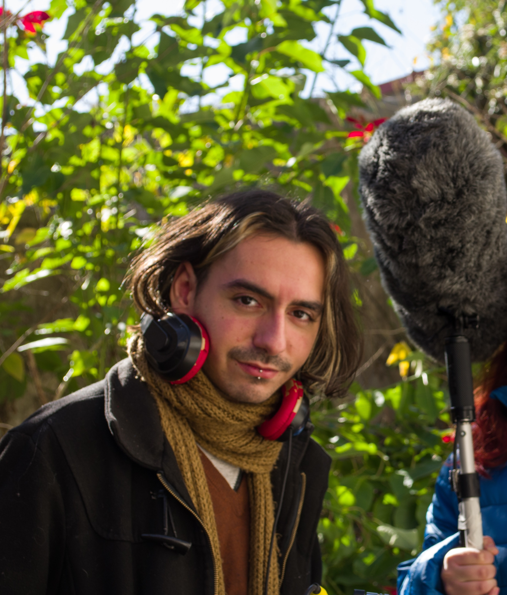

<!DOCTYPE html>
<html lang="es"></html>
<head>
    <meta name="author" content="Matías Cambarieri Gentile">
    <meta name="description" content="Biografía">
    <meta charset="UTF-8">
    <meta name="viewport" content="width=device-width, initial-scale=1.0">
    <link rel="stylesheet" href="styles.css">
    <title>Biografía</title>
</head>
<body>
    <!--TOKEN-ALUMNO: cambarieri-8763-78-->
    <header>
        <h1>
            Portal de Matías Cambarieri Gentile - cambarieri-8763-78
        </h1>
    </header>
    <nav>
        <ul>
            <li><a href="index.html">Inicio</a> </li>
            <li><a href="acercade.html#bio">Biografia</a></li>
        </ul>
    </nav>
    <main>
        <article>
            <section>
                <figure>
                    
                    <figcaption>Foto en un rodaje.</figcaption>
                </figure>
                        <p id="bio">Mi interés por la Tecnicatura Universitaria en Desarrollo Web surge de mi curiosidad por la tecnología y mi deseo de adquirir herramientas que me permitan desarrollar soluciones digitales. Siempre me ha interesado comprender cómo funcionan las aplicaciones y los sitios web, y cómo el código puede utilizarse para resolver problemas de manera creativa.</p>
            </section>
            <section>
                <p>Actualmente estoy formándome en programación y adquiriendo conocimientos en Python, Git y otras herramientas relacionadas con el desarrollo de software. Mi objetivo es continuar desarrollando mis habilidades y construir una base sólida que me permita crecer profesionalmente en el área del desarrollo web.</p>
            </section>
        </article>
    </main>
    <footer>
        © 2026 Zaitam Records S.A | CURZAS, Viedma, Río negro | cambarieri-8763-78
    </footer>
</body>